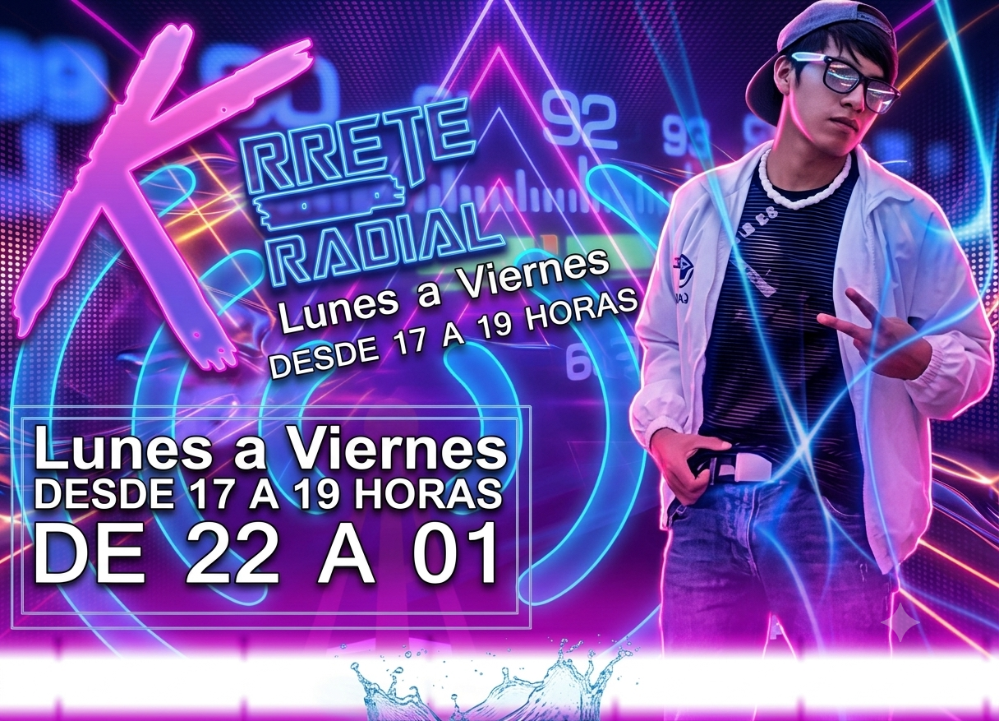

Lunes a viernes · 17:00 a 19:00 hrsCon NikoOnfire
"Krrete Radial" es el espacio de la tarde conducido por NikoOnfire, pensado para acompañar la salida del trabajo o del estudio con concursos, premios y mucha interacción con la audiencia.
Durante el programa se realizan dinámicas en vivo con premios para quienes participan, además de espacio para saludos y comentarios de los oyentes habituales.